SmartTools Add-on Manual
SmartAnimation Suite Manual
Version 1.0.0 / November 19, 2026 / For Blender 5.1.2
SmartAnimation Suite is an add-on that puts the tools you use most in animation work in one place. It lets you handle timeline operations, adjust timing, bake effects such as secondary motion, clean up keys, store poses, and manage Actions and the NLA. You can also transfer motion to a different rig (retargeting). Every section header on the screen is collapsible. Results remain as ordinary Blender data: keyframes, NLA strips, drivers, text data, and helper objects. This means you can still edit them by hand later.
Blend halfway into a saved bow
Compare a 0.5 blend with the fully applied saved bow. Reuse a pose at different strengths.
- Save bow pose
- Blend at 0.5
- Compare with full pose
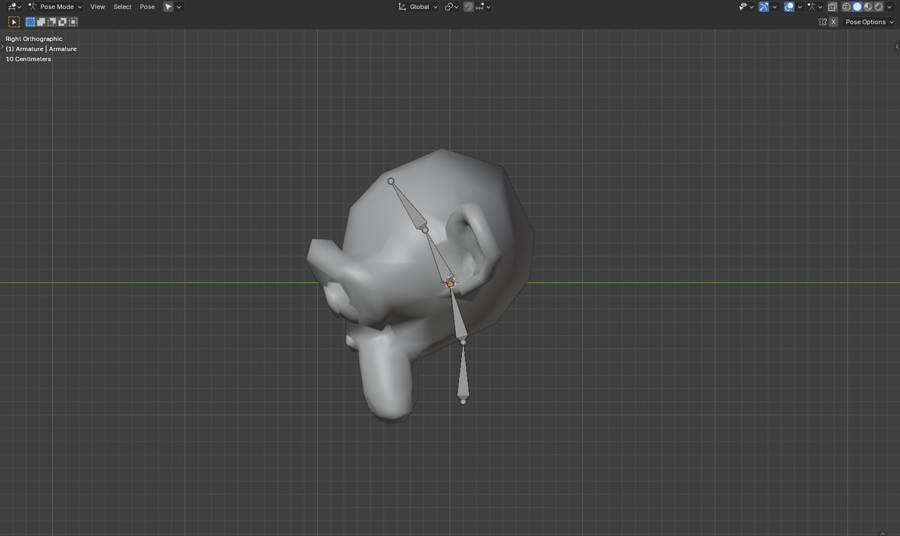
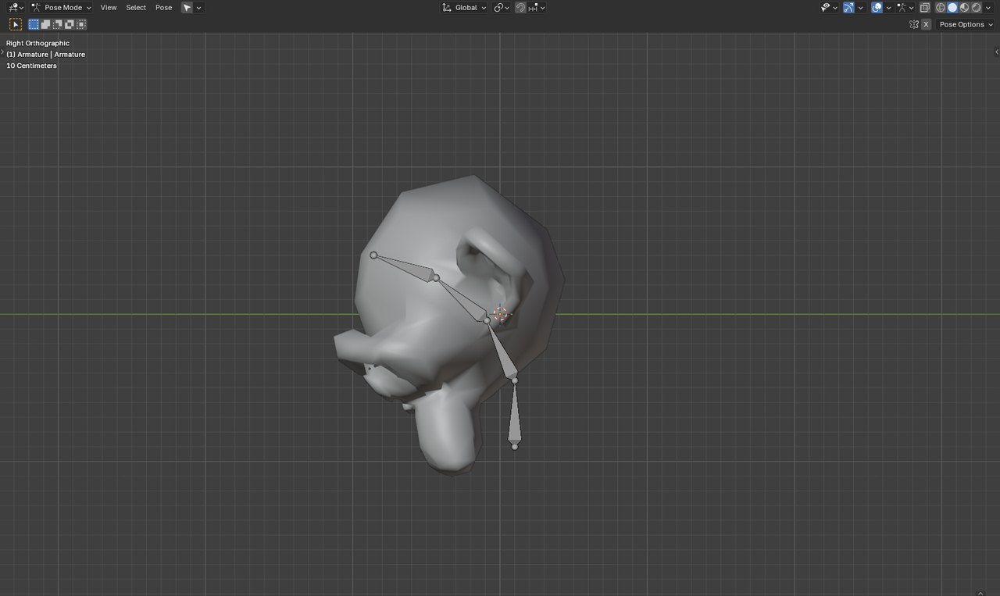
If your task is reusing a pose at partial strength, compare the half bow with the full bow on the same rig. Comparison reference · Animation Layers
Before you try it Use the same rig and compare the same frame.
1. What This Add-on Does
An add-on that gathers tools for easier keyframe work into a single Sidebar tab.
- Check and display the state of the current file (Actions, key count, number of problems, and so on)
- Create in-betweens (Tween) between keys and exaggerated poses (Push Pull)
- Choose from the task list to run key insertion, markers, the preview range, and playback settings
- Adjust timing by shifting, scaling, and evenly spacing keys, previewing steps, applying overlap, and more
- Bake effects such as springs (secondary motion), physics, camera shake, loops, and noise into keys
- Clean up curves by simplifying dense keys, removing duplicate keys and static channels, and using the Euler Filter
- Save selections and poses and recall them later (Selection Sets and Pose Snapshots)
- Send an Action to the NLA, or save it to the Motion Library and sequence it
- Build a bone map and transfer motion to a different rig and bake it
- Load the bundled animation tools (Sakura PoseLib, AnimAll, Storytools, Camera Shakify, and others) only when you need them
- Refine in-betweens and timing after blocking (rough posing)
- Reduce keys that became dense from motion capture or baking to an amount that is easy to edit
- Store favorite poses and recall them on other frames or in other shots
- Transfer the same motion to a character with a different skeleton
- Automatically generate a rough base for walks and runs, then finish by hand
At a Glance
This is how the screen changes when you use this add-on. Chapter 5 walks through the exact steps in the "Example" boxes for each feature.
ExampleCreate a Rough Bouncing Walk with One Button(demonstrated on a small cube)
Creates keys for a walk on the selected object that moves forward while swaying up and down. What you get are ordinary keyframes, so you can edit them by hand afterward.
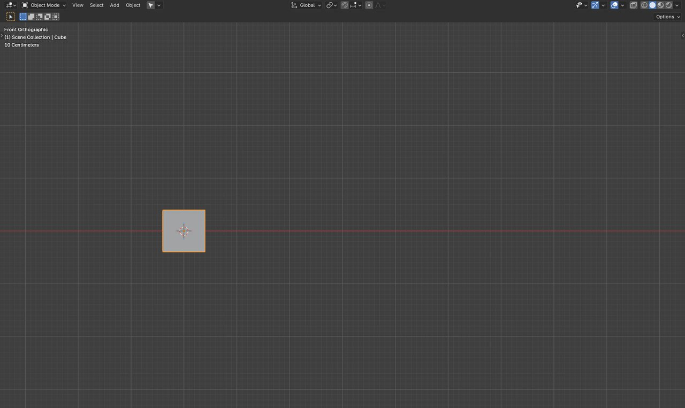
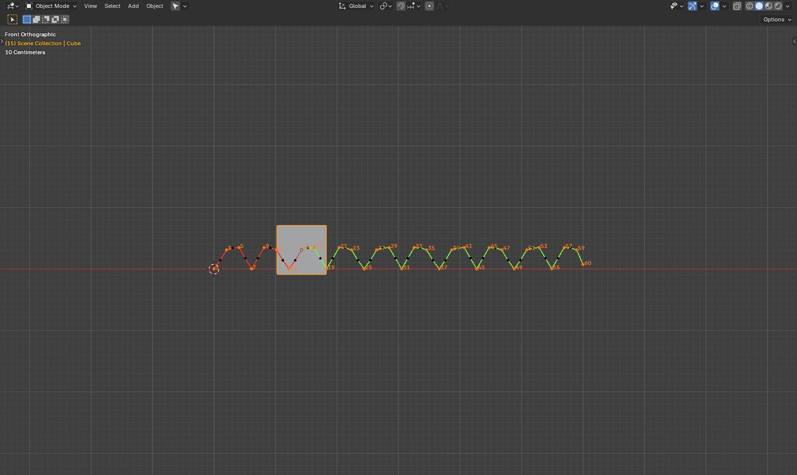
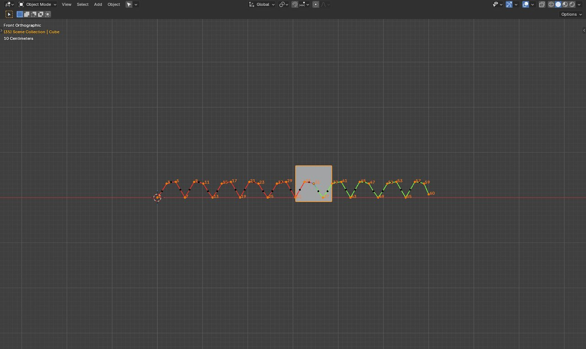
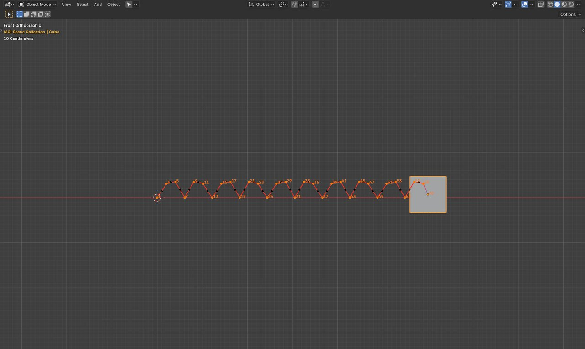
- Select the cube and set the scene's end frame to 60.
- In the "Smart Animation" tab, under "Animation Recipes", open the "Locomotion Generator" section header and set "Axis" to +X, "Distance" to 6, "Style" to "Walk", and "Bob" to 0.4.
- Click the "Generate Locomotion" button at the very bottom of the section.
- Play the animation. The cube moves to the right while swaying up and down.
What to look for: As the frames advance, the cube moves to the right and sways up and down. The zigzag line (Motion Paths) is the path the created keys draw (this line is not made by the add-on. It appears when you calculate it with "Motion Paths" in Blender's Object Properties). The line is red before the current frame and green after it, and the numbers beside the dots are frame numbers.
ExampleShow the Trail and Afterimages of a Bouncing Motion to Check the Arc(demonstrated on a bouncing cube)
Creates a line for the path (trail) and afterimages of the frames before and after (ghosts) for an object that has keys. You can see the arc and spacing of the motion on a single screen.
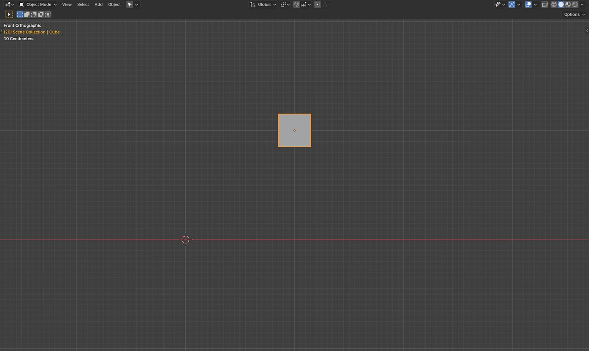
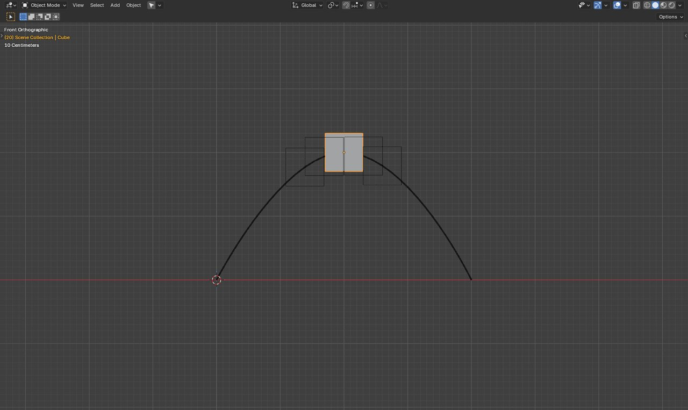
- Select the cube that has keys.
- In "Motion Visualizer", set "Mode" to "Trail + Ghost".
- Click "Create Visual Helpers".
What to look for: Before, you can see only the cube at the current frame. After, a black curve for the path appears, and the shape of the arch is clear at a glance. On either side of the current cube at the top of the arc, frame-only afterimages of the positions of the frames before and after overlap, shifting slightly.
2. Key Features
This chapter walks through the features unique to this add-on, using numbered callouts on each figure. The numbers in a figure match the numbered list below it. Click a figure to enlarge it. Each individual setting is described under its own heading in Chapter 5.
2-1. Superior Director in StudioTop Feature
Finishing animation normally means running diagnosis, key cleanup, contact fixes, interpolation adjustment, and checking one after another with separate tools. The "Superior Director" in Studio performs all seven stages, from pre-check to visual review, in a single run. The results remain as ordinary Blender data such as keyframes and text data, so you can still edit them by hand afterward.
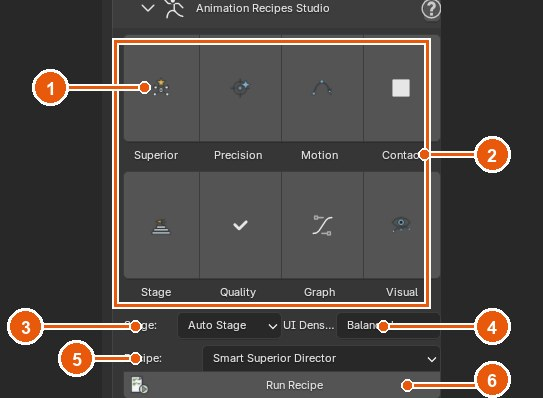
- 1Superior Icon: Each icon button runs its helper just by clicking
- 28 Icons: Superior, Stage, Precision, Quality, Motion, Curve, Contact, Visualization
- 3Stages (7 Types): Auto Stage, Blocking, Spline, Mocap / Retarget, Physics / Overlap, Final Polish, Review
- 4UI Density: Compact, Balanced, Studio. How many settings the panel shows
- 5Recipe: A set of batch processes. Some names include the name of the product they were modeled on (for example, Red9 / KineFX / MotionBuilder Retarget)
- 6Run Recipe: Runs the chosen recipe
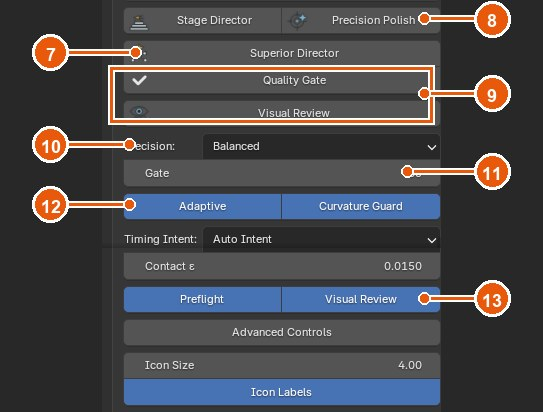
- 7Superior Director: Performs the seven stages in one go: pre-check, stage-appropriate processing, contact stabilization, timing intent, precise cleanup, quality check, and visual review
- 8Stage Director / Precision Polish: Run only the stage-appropriate processing, or only the key reduction that preserves the look, on its own
- 9Quality Gate / Visual Review: Run the quality check (the result goes to text data) and the creation of motion helper displays on their own
- 10Precision (5 Types): Hero, Safe, Balanced, Mocap Cleanup, Aggressive. The cleanup strength
- 11Gate: The minimum score needed to pass the quality check
- 12Adaptive / Curvature Guard: A cleanup that keeps the keys at the ends and at peaks and valleys while reducing those in between, and a setting that protects keys at sharp bends and stops
- 13Preflight / Visual Review: Whether to include or leave out the light check before ⑦ and the helper display after ⑦
- In the "Smart Animation" tab of the Sidebar (N panel), open "Studio".
- Set the stage at ③ to match your current work. If unsure, choose "Auto Stage".
- Set the precision at ⑩ and the gate at ⑪.
- Click ⑦ "Superior Director".
- When you want to run only one of the seven stages, run it on its own with the buttons at ⑧ and ⑨.
- Turning off ⑬ lets you run without the pre-check and visual review.
- The product names in the recipe names at ⑤ indicate the workflow they were modeled on.
- The results remain as keyframes, text data, and helper objects, so you can edit them by hand afterward.
Settings in detail: 5-11. Studio
2-2. Locomotion GeneratorSee the Figures
Creates repeating motion such as walking or running without setting keys one by one. Set the direction, distance, period, and type, and click, and keys for forward movement and vertical and side-to-side sway are set on the selected object. The before and after images are an example made on a cube with "Axis +X, Distance 6, Walk, Bounce 0.4" (the settings figure still shows the initial values).
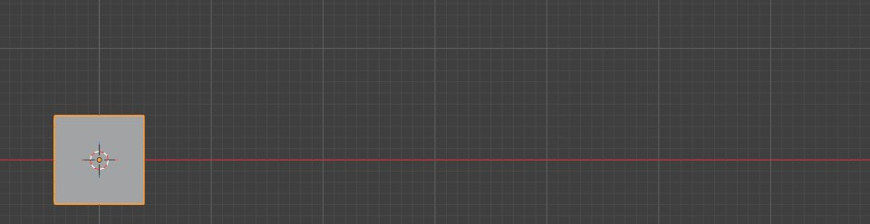

- 1Cube (Frame 15): The position at the current frame
- 2Path: Red before the current frame, green after. The numbers are frame numbers
- 3Vertical Bounce: The up and down with each step. Peaks and valleys alternate
- 4Direction of Travel: It travels in the direction set by "Axis" (here, +X)
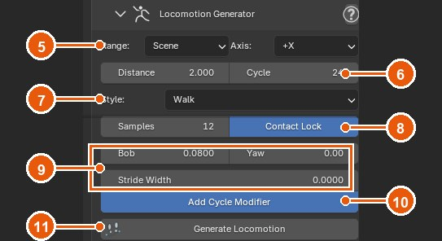
- 5Range / Axis: The range of frames to create and the direction of travel. If you set the range to be specified manually, "Start" and "End" appear
- 6Distance / Cycle: The distance to travel and the length of one repeat
- 7Style: Walk, Run, Mechanical, Cinematic
- 8Samples / Contact Lock: The number of keys placed per repeat, and whether to flatten the vertical movement around contact
- 9Bob / Yaw / Stride Width: The amount of vertical, heading, and side-to-side sway
- 10Add Cycle Modifier: Adds a modifier for repeating to the created curves
- 11Generate Locomotion: Click it to set keys on the selected object as configured
- Select the object to animate.
- Open the "Generate Locomotion" section header and set ⑤–⑨.
- To repeat indefinitely, turn on ⑩, then click ⑪ "Generate Locomotion".
- The lines and numbers in the figure are Blender's Motion Paths display, not something the add-on creates.
- What gets set are ordinary keyframes, so you can edit them by hand in the Graph Editor.
Settings in detail: 5-17. Locomotion Generator
2-3. Motion VisualizerSee the Figures
The speed of a motion and the shape of its arcs are easy to miss when you only play it back. "Create Visual Helpers" creates lines for the path (trails) and afterimages of the frames before and after (ghosts) in the scene, so you can see the flow of the motion on a single screen. The original keys do not change.
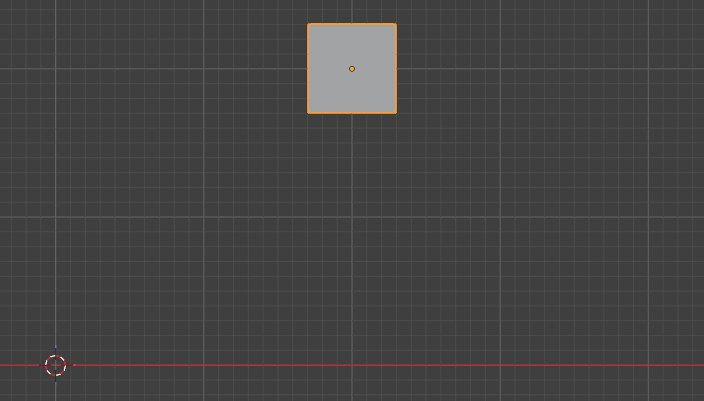
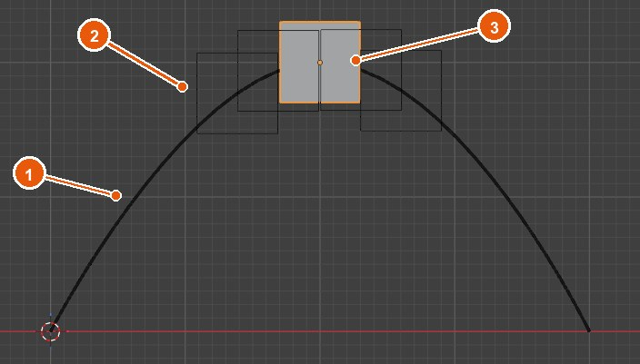
- 1Trail: The line of the path. It shows the shape of the arc
- 2Ghost: Afterimages of the frames before and after
- 3Current Cube: The object itself at the current frame
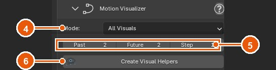
- 4Mode (4 Types): All Visualization, Trail + Ghost, Motion Path, Ballistic
- 5Past / Future / Step: How many frames of afterimages to show before and after, and the interval between them
- 6Create Visual Helpers: Click it to create the helpers in the scene. The original keys do not change
- Select an object that has motion.
- In the "Motion Visualizer" section header, set the mode at ④ and ⑤.
- Click ⑥ "Create Visual Helpers".
- Where the ghosts are packed close together, the motion is slow, and where they are far apart, it is fast. Use this to check timing.
- If the trail is a smooth arc, the path of the bouncing motion is clean.
Settings in detail: 5-14. Motion Visualizer
3. Getting Started
How to install the add-ons, how to change the interface language, and how the N panel and the "?" help buttons work in every add-on are covered in the "SmartTools Overall Specification". Please read chapters 2 to 5 there first.
| ZIP to install | SmartAnimationSuite_1.0.0.zip |
|---|---|
| Name shown in Blender | Smart Animation |
| Supported Blender | 5.1.2 |
4. Where to Find It
It appears in the "Smart Animation" tab of the Sidebar (N panel). In addition to the 3D Viewport, the same tab appears in the Sidebar of the editors listed below, such as the Dope Sheet, Graph Editor, and NLA Editor. When Smart Tools Manager is installed, which editors show it follows its placement settings.
| Editors | 3D Viewport, Dope Sheet, Graph Editor, NLA Editor, Image Editor (UV Editor), Node Editor, Video Sequencer, Movie Clip Editor, Text Editor, File Browser, Spreadsheet |
|---|---|
| Tab | Smart Animation |
| Mode | Object Mode (use the pose tools in Pose Mode) |
- For installation, Japanese localization, how to open the N panel, and the common usage of the "?" help button, see the relevant chapter of the SmartTools Overall Specification.
- Open the Sidebar of the 3D Viewport and click "Smart Animation" among the tabs on the right edge.
- Open "Overview Task" under "Always-on Toggles" at the very top.
- In "Task", choose the group of tools you want to display. It is fine to leave it at "All Functions" at first.
- Click the triangle to the left of the section header you want to use to open it.
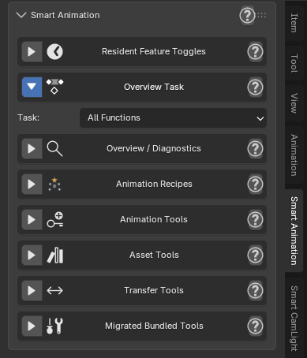
5. Features
Each heading is explained in order from the top of the panel. Click the "?" to the right of a heading to show the same explanation in Blender. The blue "Example" boxes show real operations on simple models such as Suzanne, with the 3D Viewport before and after.
5-1. Always-on Toggles
A section where you turn background features (shortcuts, header buttons, drawing on screen, and so on) on and off one by one. The bundled tool items are all "Off" at first.
LocationThe topmost section header of the Smart Animation tab.
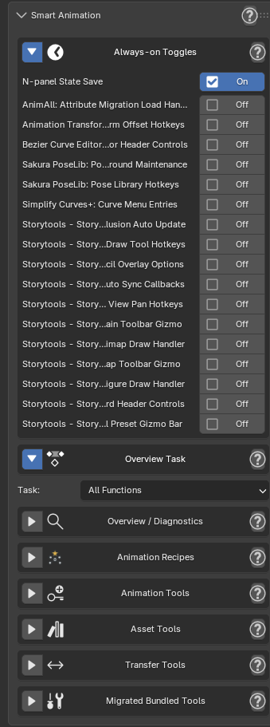
| Item | What it does |
|---|---|
| N-panel State Save | Sets when the toggles in this section and similar settings are saved to a file in the Blender configuration folder. When "On", they are saved the moment you change them. When "Off", they are saved when you close the scene or when you save the Preferences. It is "On" at first. |
| Bundled Tool Row | The upper line shows the name of the bundled tool, and the lower line shows the name of the feature (for example, "Pose Library Hotkey" under "Sakura PoseLib", "Minimap Draw Handler" under "Storytools", and "Transform Offset Hotkey" under "Animation Transform Offset"). Each click of the button on the right toggles between "On" and "Off". |
5-2. Overview Task
A section header for choosing what this tab displays.
LocationDirectly below "Always-on Toggles".
| Item | What it does |
|---|---|
| Task | Choose from "All Functions", "Animation Recipes", "Overview / Diagnostics", "Animation Tools", "Asset Tools", "Transfer Tools", and the groups of bundled tools ("Pose", "Key Data", "Transform", "Timing", "Curve", "Camera", "Storyboard"). "All Functions" lists every section header. If you choose another one, only that section header appears. |
- Click the triangle of "Overview Task" to open it.
- From the "Task" list, choose the group you want to use.
5-3. Overview / Diagnostics
A section header for checking the state of the current file. Before working or exporting, it checks for problems such as a missing Action (the motion data) or an abnormal range.
LocationAppears when you choose "All Functions" or "Overview / Diagnostics" in "Overview Task".
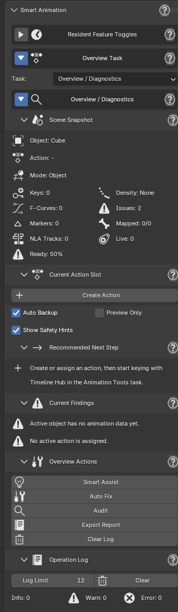
| Item | What it does |
|---|---|
| Auto Backup | Before a cleanup that deletes keys, duplicates the current Action to make a backup. Enabled at first. |
| Preview Only | When enabled, the cleanup tools do not change the data and only report how many keys or channels would change. |
| Show Safety Hints | Shows warning text near risky operations. Enabled at first. "Current Findings" also appears only when this is enabled. |
5-4. Scene Snapshot
A section that lists the state of the current selection. It is view-only and changes nothing.
LocationInside "Overview / Diagnostics".
| Item | What it does |
|---|---|
| Object / Mode / Action | The name of the selected object, the current mode, and the name of the Action it uses. |
| Keys / F-Curves / Markers / NLA Tracks | The number of keyframes, the number of motion curves, the number of markers, and the number of NLA tracks. |
| Readiness / Density / Problems | How ready you are to start working (%), how crowded the keys are, and the number of problems found. |
| Matched Bones / Live | The number of bones matched in retargeting, and the number of temporary transfers (live retargets) currently connected. |
5-5. Current Action Slot
A section for choosing the Action to assign to the selected object, or creating a new one.
LocationInside "Overview / Diagnostics".
| Item | What it does |
|---|---|
| Action Field | For an object that has motion data, choose the Action to assign. You can also create a new one. |
| Create Action | Appears for an object that has no motion data yet. Click it to create a new Action and assign it to the selected object. |
5-6. Recommended Next Step
Tells you in a sentence what to do next, based on the current state.
LocationInside "Overview / Diagnostics".
| Item | What it does |
|---|---|
| Guidance Text | It points out missing preparation or the next step, for example "Select an object to begin." or "Check the impact in Cleanup Preview before cleaning up dense animation." When the selected object has no Action, it guides you to create or assign one and start key work in the Timeline Hub of the "Animation Tools" task. When something is blocking you, it guides you to "Current Findings". Long text wraps onto multiple lines. |
5-7. Current Findings
Lists the problems found (no animation data, an abnormal preview range, and so on).
LocationInside "Overview / Diagnostics". Appears only when there are problems and "Show Safety Hints" is enabled.
| Item | What it does |
|---|---|
| Problem Row | A red row is a problem you need to fix first. A row with a triangle mark is a caution worth checking. |
5-8. Overview Actions
A section that performs diagnosis, repair, and recording with a single button each.
LocationInside "Overview / Diagnostics".
| Item | What it does |
|---|---|
| Smart Assist | Examines the current scene, switches the panel display to the task that suits the work, and tells you the reason in a message. The animation data does not change. |
| Auto Fix | Click it to fix common setup problems, such as a missing Action or an abnormal preview range. |
| Audit | Click it to check for problems you should resolve before editing or exporting. |
| Export Report | Writes the scene summary and the diagnosis results to Blender text data. |
| Clear Log | Deletes the old messages in "Operation Log". |
ExampleHave the Panel Switch to the Group of Tools That Fits the Current Situation(demonstrated on a cube with no keys)
"Smart Assist" examines the current scene and switches the panel display to the task that fits your work. The animation data does not change.
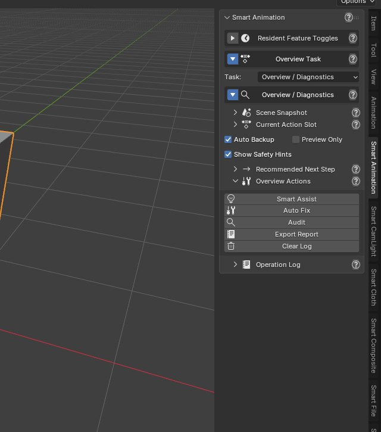
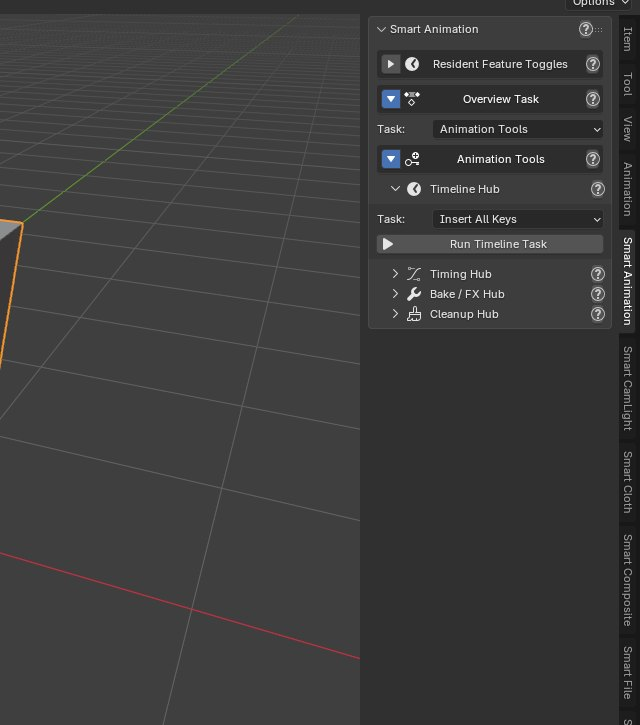
- Select a cube with no keys.
- In "Overview Task", set "Task" to "Overview / Diagnostics".
- Click "Smart Assist" in "Overview Actions".
What to look for: "Task" in the Sidebar changes from "Overview / Diagnostics" to "Animation Tools". Open the "Animation Tools" section header, and there is the "Timeline Hub" for starting to set keys. The reason for the switch is shown in a message at the bottom of the screen.
5-9. Operation Log
A section for viewing the record of recent operations this add-on has performed, along with warnings and errors.
LocationInside "Overview / Diagnostics".
| Item | What it does |
|---|---|
| Log Limit | The number of records to keep. |
| Clear | Click it to delete the records. |
| Info / Warnings / Errors | The number of records of each kind. |
5-10. Animation Recipes
A section header for advanced helpers that perform several steps at once. It includes in-betweening, curve cleanup, contact stabilization, physics, walk generation, and retargeting.
LocationAppears when you choose "All Functions" or "Animation Recipes" in "Overview Task".
| Item | What it does |
|---|---|
| Studio | A section header that groups the large icon buttons and the recipe run. |
| Motion Director and others | Below it, detailed section headers are listed by purpose. When "UI Density" is "Compact", they do not appear unless you enable "Advanced Controls". |
5-11. Studio
A control board that lets you run frequently used helpers with large icon buttons.
LocationThe first section header inside "Animation Recipes".
| Item | What it does |
|---|---|
| Icon Buttons (Superior, Stage, Precision, Quality, Motion, Curve, Contact, Visualization) | Each helper runs with a single click. |
| Stage | Choose the work stage ("Auto Stage", "Blocking", "Spline", "Mocap / Retarget", "Physics / Overlap", "Final Polish", "Review"). |
| UI Density | From "Compact", "Balanced", and "Studio", choose how many settings the panel shows. It is "Balanced" at first. |
| Recipe / Run Recipe | Choose the batch process (recipe) and click "Run Recipe" to run it. Some names contain the name of the product they were modeled on as is (for example, "Red9 / KineFX / MotionBuilder Retarget"). |
| Superior Director | Performs in one go a pre-check of quality, the processing that suits the stage, contact stabilization, applying the timing intent, precise cleanup, a quality check, and a visual review. |
| Stage Director / Precision Polish / Quality Gate / Visual Review | Each performs on its own the processing that suits the stage, key reduction that preserves the look, a quality check (the result is written to text data), and creation of motion helper displays. |
| Precision / Gate | The cleanup strength ("Hero", "Safe", "Balanced", "Mocap Cleanup", "Aggressive") and the minimum score needed to pass the quality check. |
| Adaptive / Curvature Guard | A cleanup that reduces the keys in between while keeping the keys at the ends and at peaks and valleys, and a setting that protects keys at sharp bends and stops. |
| Timing Intent / Contact ε | The intent for how interpolation is applied, and the height tolerance used when detecting contact. |
| Preflight / Visual Review / Advanced Controls | Toggles a light check before running, the helper display after the Superior Director, and the display of detailed section headers. |
| Icon Size / Icon Labels | Sets the size of the icon buttons and whether the text below them is shown. |
5-12. Motion Director
At the current frame, creates an in-between from the keys before and after, or strengthens or weakens a pose.
LocationInside "Animation Recipes".
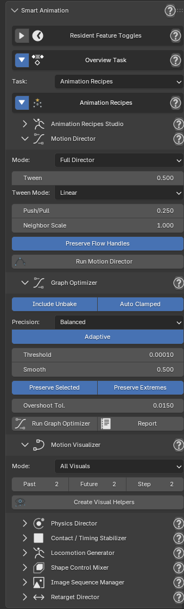
| Item | What it does |
|---|---|
| Mode | Choose the process to perform from "Full Director", "Tween Only", "Push/Pull Only", and "Scale To Neighbors Only". |
| Tween / Tween Mode | Sets which of the poses before and after the in-between leans toward, and how it is made. At 0.0 it matches the previous key, and at 1.0 it matches the next key. |
| Push/Pull / Neighbor Scale | The strength of the pose exaggeration and the strength of the scaling based on the keys before and after. |
| Preserve Flow Handles | After processing, arranges the handles so they are less likely to overshoot, keeping the flow. |
| Run Motion Director | Click it to set a key at the current frame with the "Mode" process applied. |
- Place the playhead (the current frame) between one pose with keys and the next.
- Set "Mode" and "Tween".
- Click "Run Motion Director".
ExampleCreate an In-Between Weighted Toward the End Between Two Poses(demonstrated on a cube (the left frame is the previous key, the right frame is the next key))
Place the playhead between the keys before and after, and create an in-between key with the "Tween" value. 0.5 is exactly halfway, and the closer to 1, the closer to the next key.
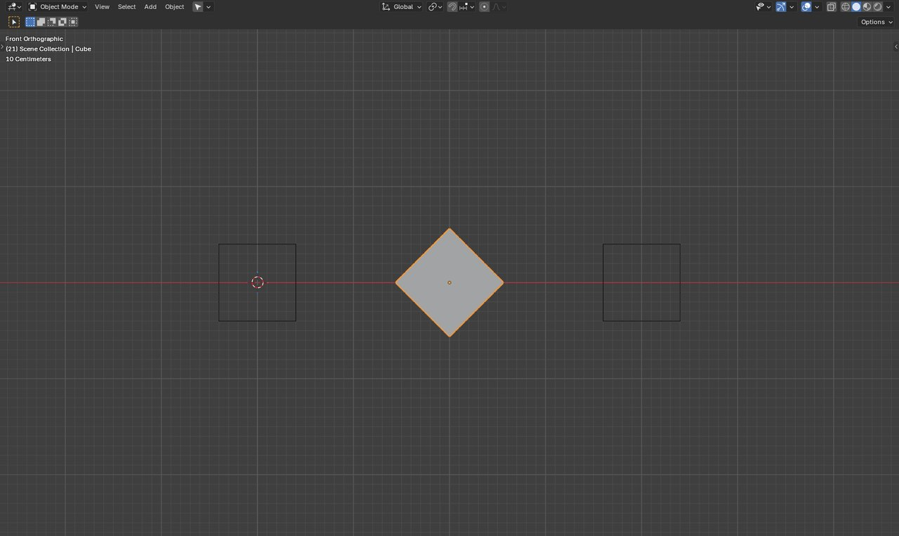
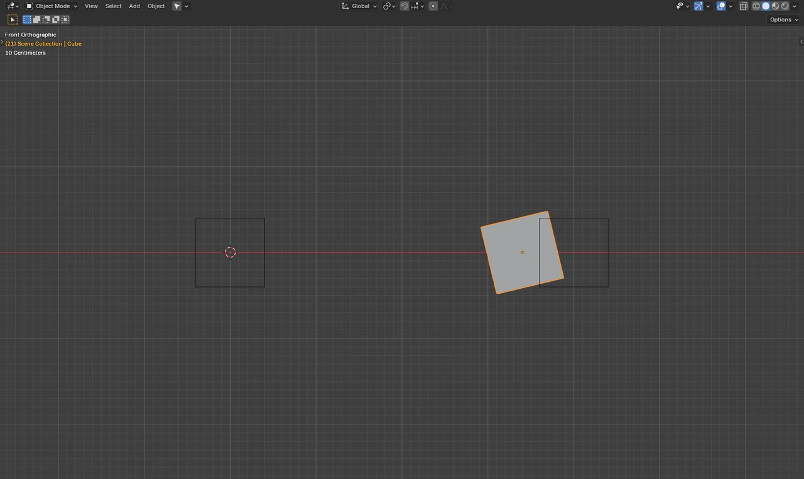
- Select a cube with keys at frames 1 and 41, and place the playhead at frame 21.
- In "Motion Director", set "Mode" to "Tween Only" and "Tween" to 0.85.
- Click "Run Motion Director".
What to look for: Before, at frame 21 the cube is exactly midway between the two frames and has rotated only halfway (45 degrees). After, the new in-between key moves it close to the right frame (the next key), and the rotation also approaches the orientation of the next key.
5-13. Graph Optimizer
Cleans up motion curves (F-Curves) in bulk. It combines Euler discontinuity correction, cleanup of duplicates and static channels, and smoothing.
LocationInside "Animation Recipes".
| Item | What it does |
|---|---|
| Include Unbake / Auto Clamped | Whether to include the process that reduces dense keys (Smart Unbake), and whether to arrange the handles so they are less likely to overshoot. |
| Precision / Adaptive | The cleanup strength and the key reduction that preserves the look. |
| Threshold / Smooth | The size of the difference treated as the same, and the smoothing strength. |
| Preserve Selected / Preserve Extremes | Keeps the selected keys and the keys at peaks and valleys instead of deleting them. |
| Overshoot Tol. | How much curve overshoot the quality check allows. |
| Run Graph Optimizer / Report | Click "Run Graph Optimizer" to clean up the curves. Click "Report" to write the quality check result to text data. |
5-14. Motion Visualizer
Creates motion trails, ghosts (afterimages of the frames before and after), motion paths, and a parabola guide so you can check the shape of the motion by eye.
LocationInside "Animation Recipes".
| Item | What it does |
|---|---|
| Mode | Choose the helper to create from "All Visuals", "Trail + Ghost", "Motion Paths", and "Ballistic". |
| Past / Future / Step | How many frames of afterimages to show before and after, and their spacing. |
| Create Visual Helpers | Click it to create in the scene the helpers that suit "Mode" (a line for the path, objects for the afterimages, motion paths, and a parabola guide). The original keys do not change. |
ExampleShow the Trail and Afterimages of a Bouncing Motion to Check the Arc(demonstrated on a bouncing cube)
Creates a line for the path (trail) and afterimages of the frames before and after (ghosts) for an object that has keys. You can see the arc and spacing of the motion on a single screen.
- Select the cube that has keys.
- In "Motion Visualizer", set "Mode" to "Trail + Ghost".
- Click "Create Visual Helpers".
What to look for: Before, you can see only the cube at the current frame. After, a black curve for the path appears, and the shape of the arch is clear at a glance. On either side of the current cube at the top of the arc, frame-only afterimages of the positions of the frames before and after overlap, shifting slightly.
5-15. Physics Director
Turns the calculations for jump parabolas, contact, secondary motion, and rigid bodies into keys you can edit by hand.
LocationInside "Animation Recipes".
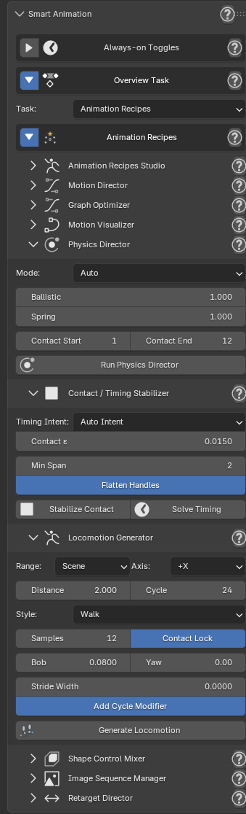
| Item | What it does |
|---|---|
| Mode | Choose from "Auto", "Ballistic Guide", "Ballistic Bake", "Fulcrum / Contact", "Spring", and "Rigid Body". |
| Ballistic / Spring | How much of the parabola or secondary-motion result to blend into the original motion. At 0 it stays as the original, and at 1 it is the calculated result itself. |
| Contact Start / Contact End | The range of frames treated as contact. |
| Run Physics Director | Click it to perform the "Mode" process and leave the result as keys or helpers you can edit by hand. |
5-16. Contact / Timing Stabilizer
Finds where feet and similar parts are on the floor and evens out their height, and matches the way interpolation is applied to the intent of the motion.
LocationInside "Animation Recipes".
| Item | What it does |
|---|---|
| Timing Intent / Contact ε | The interpolation intent and the height tolerance for detecting contact. A larger value picks up more contacts, and a smaller value makes it harder to flatten motion that lifts away. |
| Min Span / Flatten Handles | The minimum number of consecutive keys treated as contact, and whether to flatten the handles during contact. Contact detection targets groups of consecutive keys. It does not detect contact from widely spaced keys alone, so bake the motion first if needed. |
| Stabilize Contact / Solve Timing | Click "Stabilize Contact" to even out the contact height. Click "Solve Timing" to apply interpolation that matches the "Timing Intent" to the keys. |
5-17. Locomotion Generator
Creates a rough base for repeating movement, such as walking or running, on the selected object. The result is ordinary keyframes.
LocationInside "Animation Recipes".
| Item | What it does |
|---|---|
| Range / Axis | The range of frames to create and the direction of travel. If you set the range to be specified manually, "Start" and "End" appear. |
| Distance / Cycle / Style | The distance to travel, the length of one repeat, and the motion type ("Walk", "Run", "Mechanical", "Cinematic"). |
| Samples / Contact Lock | The number of keys placed per repeat, and whether to flatten the vertical movement around contact. |
| Bob / Yaw / Stride Width | The amount of vertical bounce, heading sway, and side-to-side sway. |
| Add Cycle Modifier | Adds a modifier for repeating to the created curves. |
| Generate Locomotion | Click it to set keys on the selected object as configured. |
ExampleCreate a Rough Bouncing Walk with One Button(demonstrated on a small cube)
Creates keys for a walk on the selected object that moves forward while swaying up and down. What you get are ordinary keyframes, so you can edit them by hand afterward.
- Select the cube and set the scene's end frame to 60.
- In the "Smart Animation" tab, under "Animation Recipes", open the "Locomotion Generator" section header and set "Axis" to +X, "Distance" to 6, "Style" to "Walk", and "Bob" to 0.4.
- Click the "Generate Locomotion" button at the very bottom of the section.
- Play the animation. The cube moves to the right while swaying up and down.
What to look for: As the frames advance, the cube moves to the right and sways up and down. The zigzag line (Motion Paths) is the path the created keys draw (this line is not made by the add-on. It appears when you calculate it with "Motion Paths" in Blender's Object Properties). The line is red before the current frame and green after it, and the numbers beside the dots are frame numbers.
5-18. Shape Control Mixer
Creates knobs (custom properties) for driving Shape Keys and connects them to the Shape Keys (drivers).
LocationInside "Animation Recipes".
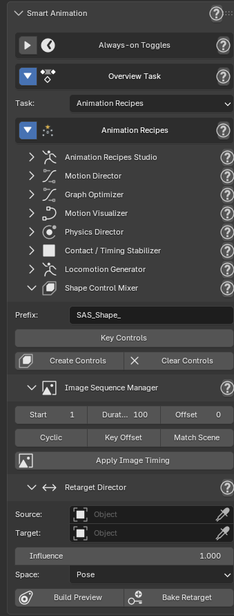
| Item | What it does |
|---|---|
| Prefix | The text added to the start of the names of the knobs it creates. |
| Key Controls | Sets keys on the created knobs at the current frame. |
| Create Controls / Clear Controls | Click "Create Controls" to create a knob for each Shape Key other than Basis on the selected mesh. Click "Clear Controls" to remove the connections (drivers) and leave the Shape Key values at their current values. |
5-19. Image Sequence Manager
Sets the playback start, length, and offset of the image sequence textures used by the selected object.
LocationInside "Animation Recipes".
| Item | What it does |
|---|---|
| Start / Duration / Offset | The playback start, the number of images to use, and the number of frames to offset. |
| Cyclic / Key Offset / Match Scene | Whether to loop playback, whether to set a key on "Offset" at the current frame, and whether to match the scene range. |
| Apply Image Timing | Click it to rewrite the playback start, length, and offset of the image sequence textures on the selected object to these settings. |
5-20. Retarget Director
Transfers the motion of another rig with temporary connections (constraints) so you can check it, and turns it into keys if it looks good.
LocationInside "Animation Recipes".
| Item | What it does |
|---|---|
| Source / Target | The armature the motion comes from and the armature it is transferred to. |
| Influence / Space | The strength of the transfer and the coordinate space ("Pose" or "World") it is transferred in. |
| Build Preview / Bake Retarget | Click "Build Preview" to create a temporary transfer. If it looks good, click "Bake Retarget" to bake it as keys onto the target rig. |
5-21. Animation Tools
A section header for the tools you use in daily work: timeline, timing, effect baking, and cleanup.
LocationAppears when you choose "All Functions" or "Animation Tools" in "Overview Task".
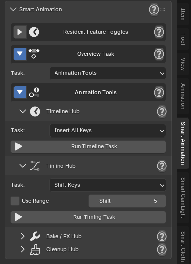
| Item | What it does |
|---|---|
| Inner Section Headers | "Timeline Hub", "Timing Hub", "Bake / FX Hub", "Cleanup Preview", and "Cleanup Hub" are listed. "Cleanup Preview" appears only when there is an Action and a cleanup task is chosen in "Cleanup Hub". In each one, choose the work to do in "Task", set the settings that appear, and then run it. |
5-22. Timeline Hub
Handles key insertion, markers, the preview range, playback settings, and how camera shots are arranged.
LocationInside "Animation Tools".
| Item | What it does |
|---|---|
| Task | Choose from "New Action", "Duplicate Action", "Insert All Keys", "Insert Location Keys", "Bake Visual Range", "Shape Keys: All", "Add Marker", "Mark Selected Keys", "Preview Range from Keys", "Clear Preview", "Playback: Blocking", "Playback: Review", "Playback: Lip Sync", "Camera Sequence", "Dual View Review", and more. |
| Per-Task Settings | Depending on the chosen task, "Marker Name", "Range", "Spacing", "Shot Length", "Direction", "Ratio", "Lock Camera", "Auto Key", "Use Preview Range", and others appear. |
| Run Timeline Task | Click it to run the chosen task. For example, for "Insert All Keys", it sets location, rotation, and scale keys at the current frame. |
ExampleSet Keys as Guided and Watch the Scene Snapshot Numbers Increase(demonstrated on a cube with no keys)
Set keys in the Timeline Hub as guided by "Recommended Next Step". You can confirm the result with the numbers in "Scene Snapshot".
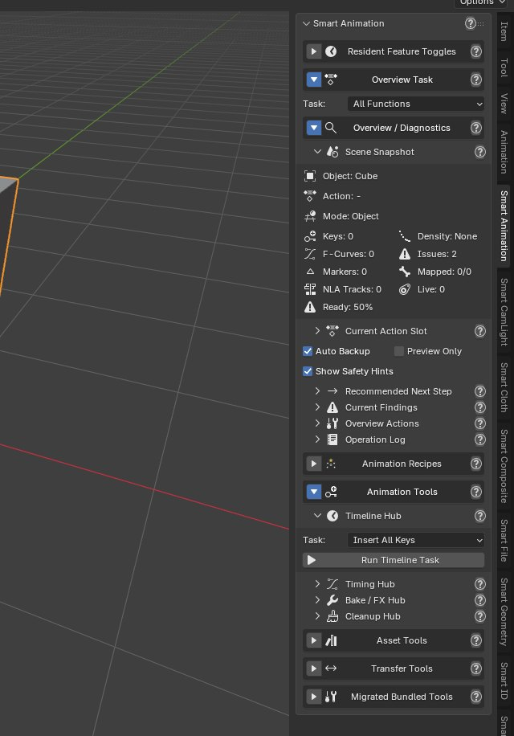
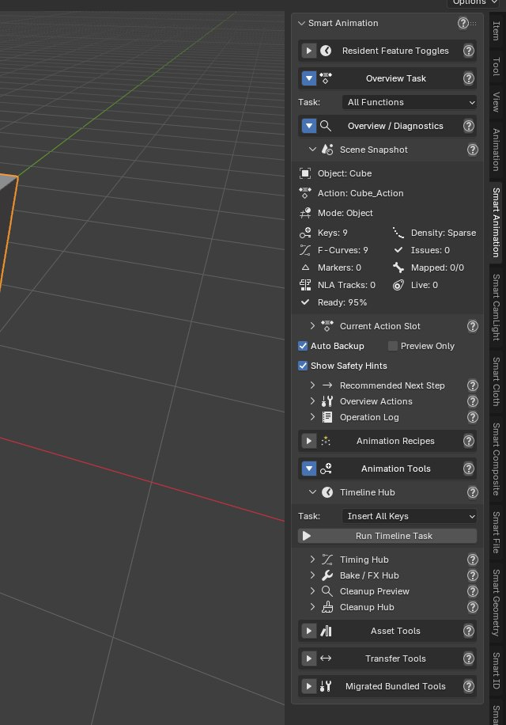
- Select a cube with no keys. Set "Task" to "All Functions".
- In "Animation Tools" > "Timeline Hub", set "Task" to "Insert All Keys".
- Click "Run Timeline Task".
What to look for: In "Scene Snapshot", "Keys" and "F-Curves" increase from 0 to 9, and the name of the Action appears in the "Action" field. Keys go into 9 curves in total, three each for location, rotation, and scale. "Issues" also becomes 0.
5-23. Timing Hub
In addition to shifting, shrinking, and evenly spacing the timing of keys, it handles in-betweens, contact holds, step previews, overlap, and more.
LocationInside "Animation Tools".
| Item | What it does |
|---|---|
| Task | Choose from "Shift Keys", "Scale Timing", "Even Timing", "Tween", "Push Pull", "Scale to Neighbors", "Contact Hold", "Stepped Preview", "Overlap Pass", "Cascade Delay", "Randomize Timing", and "Auto Fulcrum". |
| Use Range / Start / End | Appears for "Shift Keys", "Scale Timing", and "Even Timing". Processes only the specified range of frames. |
| Per-Task Settings | "Shift", "Scale", "Pivot", "Factor", "Delay", "Seed", "Min", "Max", and others appear. |
| Run Timing Task | Click it to run the chosen task. For "Contact Hold" the buttons change to "Range from Keys" and "Apply", and for "Stepped Preview" they change to "Preview", "Step Keys", and "Clear". |
5-24. Bake / FX Hub
Creates effects such as stop-motion style, secondary motion, physics, camera shake, loops, and noise, and turns them into keys you can edit by hand.
LocationInside "Animation Tools".
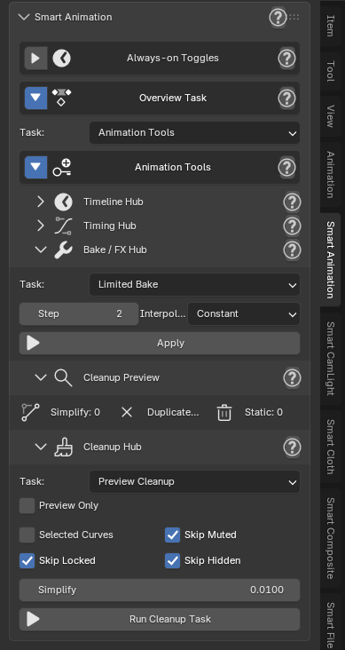
| Item | What it does |
|---|---|
| Task | Choose from "Limited Bake", "Spring Dynamics", "Spring Magic", "Physics Bake", "Motion Signal", "Motion Stretch", "Vehicle Drive", "Transform Reveal", "Deformer Reveal", "Trail Curve", "Ghost Preview", "Ballistic Guide", "Ballistic Bake", "Camera Shake", "Loop Helper", "Noise Modifier", "Motion Paths", "Dynamic Parent", "Copy Global", and "Paste Global". |
| Per-Task Settings | For example, "Limited Bake" shows "Spacing" and "Interpolation"; "Spring Dynamics" shows "Stiffness", "Damping", and "Blend"; "Motion Stretch" shows "Axes", "Plane", "Strength", "Squash", and "Max"; and "Spring Magic" shows "Axes", "Collision", and "Radius". In a straight chain extended in the same direction, each joint may inherit the movement of its parent, producing motion proportional to length. This is not a feature that always shows a delay for each joint. |
| Apply / Clear | Click "Apply" to create the effect. For tasks that create helpers, "Clear" also appears, and clicking it deletes what was created. |
ExampleStretch Only the Fast-Moving Parts in the Direction of Travel(demonstrated on a cube moving quickly to the right)
"Motion Stretch" creates keys that stretch an object in its direction of travel according to the speed of the motion. It gives a look like "smear" in animation (a stretch that suggests blur).
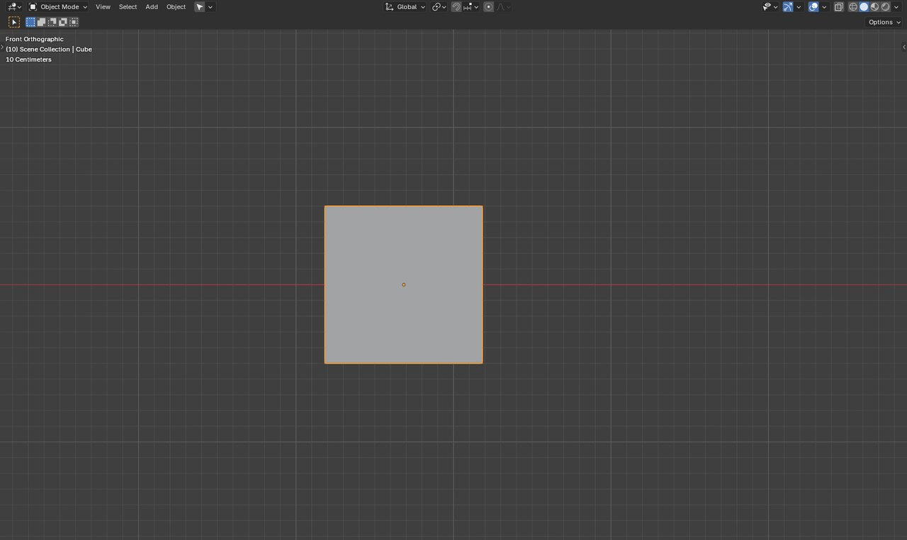
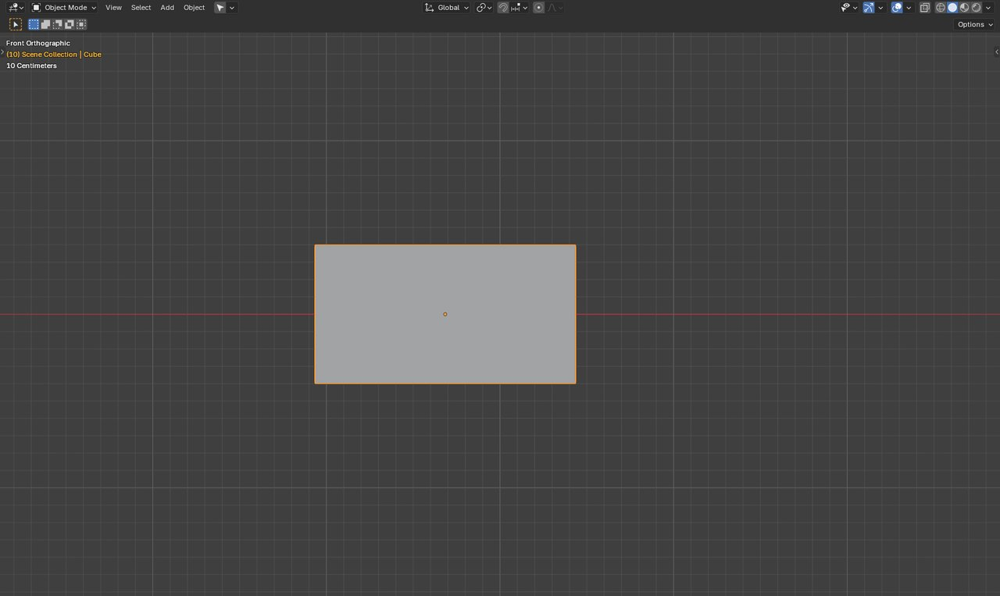
- Select a cube moved with keys.
- In "Bake / FX Hub", set "Task" to "Motion Stretch", "Axis" to X, "Strength" to 0.8, and "Max" to 3.
- Click "Apply".
What to look for: The same cube at the same frame becomes long from side to side in the later figure, and a little thinner vertically and in depth. When it is stationary or slow, it stays close to its original shape.
5-25. Cleanup Preview
Before running a cleanup, shows an estimate of how many keys and channels will be removed.
LocationInside "Animation Tools", above "Cleanup Hub". Appears only when there is an Action and the "Task" in "Cleanup Hub" is "Cleanup Preview", "Curve Simplify", "Remove Duplicates", or "Delete Static".
| Item | What it does |
|---|---|
| Simplify / Duplicates / Static | The number of keys removed by simplification, duplicate keys, and static channels. |
5-26. Cleanup Hub
Handles curve simplification, smoothing, deletion of duplicate keys and static channels, the Euler Filter, and deletion of the helpers you created.
LocationInside "Animation Tools".
| Item | What it does |
|---|---|
| Task | Choose from "Cleanup Preview", "Curve Simplify", "Smooth Curves", "Remove Duplicates", "Delete Static", "Smart Unbake", "Euler Filter", "Tangent Preset", "Shape Smooth", "Shape Optimize", "Clear Stepped Preview", "Clear Trails", "Clear Ghosts", and more. |
| Preview Only | Reports only the amount that would change, without changing the data. |
| Selected Curves / Skip Locked / Skip Muted / Skip Hidden | Narrows down which F-Curves are processed. |
| Simplify / Threshold / Factor / Iterations / Tolerance | Settings for the strength of the processing, which appear to match the task. |
| Run Cleanup Task | Click it to run the chosen task. For example, for "Curve Simplify", it deletes in-between keys as far as the shape can be kept. |
ExampleReduce Dense Keys While Keeping the Shape(demonstrated on a cube with a key on every frame (Graph Editor))
"Curve Simplify" deletes in-between keys that can go without changing the shape. It brings a curve made dense by baking or motion capture down to an amount you can edit by hand.
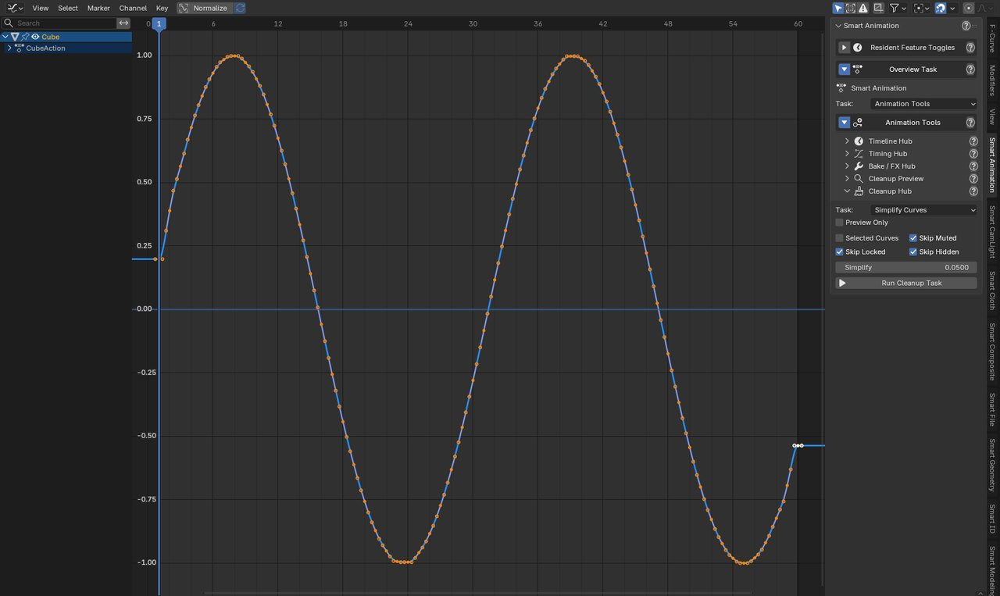
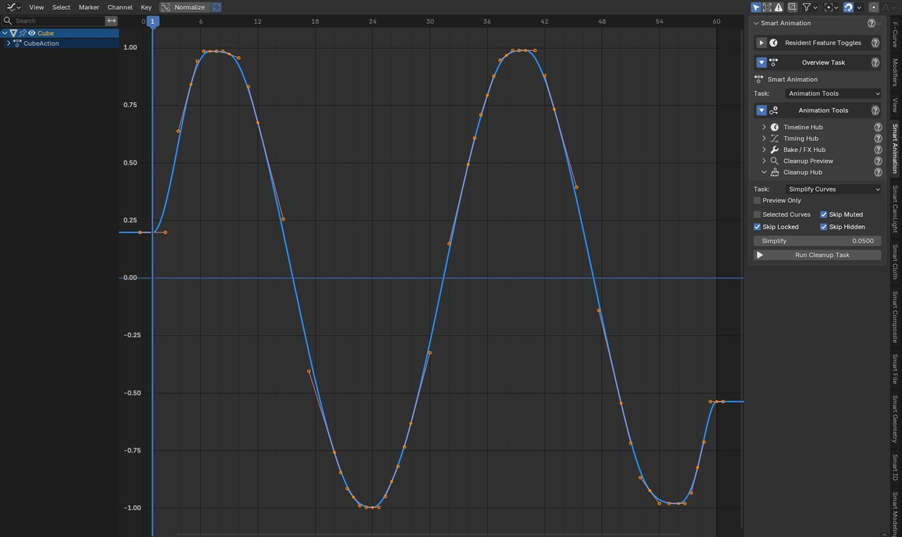
- Select an object with a key on every frame and open the Graph Editor.
- In "Animation Tools" > "Cleanup Hub", set "Task" to "Curve Simplify" and "Simplify" to 0.05.
- Click "Run Cleanup Task".
What to look for: The 60 keys packed along the curve are reduced to 20. The circles at the ends of the thin lines extending from the keys are handles, and they are not counted as keys. The shape of the line is roughly kept. Because "Auto Backup" is enabled, the original Action remains as a backup.
5-27. Asset Tools
A section header for saving and reusing selections, poses, and Actions that you use repeatedly.
LocationAppears when you choose "All Functions" or "Asset Tools" in "Overview Task".
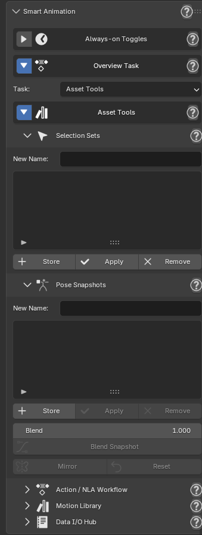
| Item | What it does |
|---|---|
| Inner Section Headers | "Selection Sets", "Pose Snapshots", "Action / NLA Workflow", "Motion Library", and "Data I/O Hub" are listed. |
5-28. Selection Sets
Saves the selection of objects or pose bones under a name, and returns to the same selection later.
LocationInside "Asset Tools".
| Item | What it does |
|---|---|
| New Name | The name of the set to save. |
| Set List | The saved sets are listed. |
| Store / Apply / Remove | Three buttons: save the current selection, return to the selection of the chosen set, and delete a set. |
5-29. Pose Snapshots
Stores the current pose so you can recall it later or blend it with the current pose.
LocationInside "Asset Tools".
| Item | What it does |
|---|---|
| New Name | The name of the pose to store. |
| Snapshot List | The stored poses are listed. |
| Store / Apply / Remove | Three buttons: store the current pose, return to the chosen pose, and delete a stored pose. "Save" stores the selected bones, or all bones when nothing is selected. |
| Blend / Blend Snapshot | Applies the stored pose with the amount of blending you set. At 1.0 it becomes the stored pose itself. |
| Mirror / Reset | "Invert" mirrors the pose of the selected bones left to right (use it on bones with left and right names such as .L and .R). "Reset" returns the location, rotation, and scale of the selected bones to their initial values. |
- Select an armature and switch to Pose Mode.
- Enter a name in "New Name" and click "Save".
- Later, choose it from the list and click "Apply" to return to that pose.
ExampleBlend a Stored Pose Halfway, or Restore It Exactly(demonstrated on Suzanne driven by 4 bones)
Store a bent pose with "Save", then later blend it in only halfway with "Blend Snapshot", or restore it exactly with "Apply".
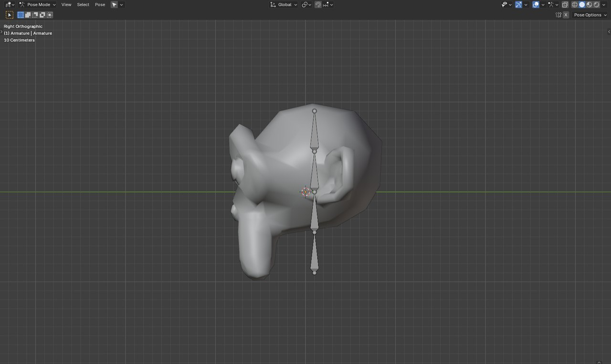
- Select the armature and bend the body in Pose Mode.
- In "Pose Snapshots", enter "Bow" in "New Name" and click "Save".
- After resetting the pose, set "Blend" to 0.5 and click "Blend Snapshot".
- Click "Apply" to return to the stored pose itself.
What to look for: With "Blend Snapshot" at 0.5, the bend is about half, and with "Apply", it bends forward as much as when it was stored. Comparing the tilt of the bone lines shows the difference.
5-30. Action / NLA Workflow
Chooses or creates an Action and sends it to the NLA (the mechanism that turns motion into strips and stacks them).
LocationInside "Asset Tools".
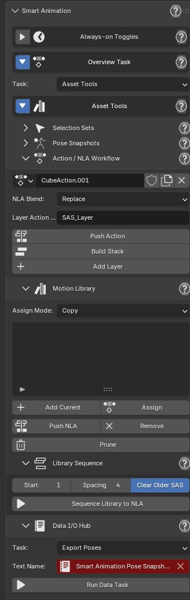
| Item | What it does |
|---|---|
| Action Field / Create Action | Choose the Action to assign, or create a new one. |
| NLA Blend | How to stack when sending to the NLA ("Replace", "Combine", "Add", "Subtract", "Multiply"). |
| Layer Action Name | The name given to the Action of the layer you stack. |
| Push Action / Build Stack / Add Layer | Click each to send the current Action to the NLA, create a stack of layers, or add a layer of motion, respectively. |
5-31. Motion Library
Saves Actions you use repeatedly in a list, and assigns them to objects or sends them to the NLA.
LocationInside "Asset Tools".
| Item | What it does |
|---|---|
| Assign Mode | Choose whether to assign the original Action as is ("Link") or assign a duplicate ("Copy"). |
| Library List | The saved Actions are listed. |
| Add Current / Assign / Push NLA / Remove | Four buttons: add the current Action to the list, assign it to the selected object, send it to the NLA, and remove it from the list. |
| Prune | Click it to remove from the list the items whose original Action no longer exists. |
5-32. Library Sequence
Arranges the Actions of the Motion Library in order on the NLA.
LocationA section header inside "Motion Library".
| Item | What it does |
|---|---|
| Start / Spacing | The frame to start arranging from, and the number of frames between strips. |
| Clear Older SAS | Deletes the tracks previously arranged with this tool and then arranges. |
| Sequence Library to NLA | Click it to turn the Actions in the list into NLA strips and arrange them in order. |
5-33. Data I/O Hub
Writes poses, Selection Sets, the Motion Library, and bone maps to Blender text data, and reads them back from it.
LocationInside "Asset Tools".
| Item | What it does |
|---|---|
| Task | Choose from "Export Poses", "Import Poses", "Export Selections", "Import Selections", "Export Library", "Import Library", "Prune Library", "Export Bone Map", and "Import Bone Map". |
| Text | The name of the text data to write to or read from. When no text data with that name exists yet, the field is shown in red (exporting creates it under that name). It does not appear for "Prune Library". |
| Run Data Task | Click it to run the chosen task. |
5-34. Transfer Tools
A section header for transferring motion to a different rig (retargeting).
LocationAppears when you choose "All Functions" or "Transfer Tools" in "Overview Task".
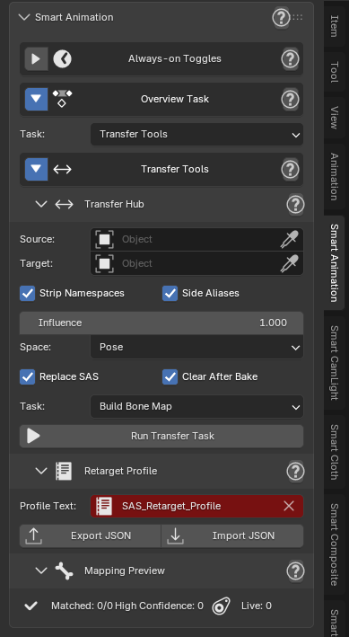
| Item | What it does |
|---|---|
| Inner Section Headers | "Transfer Hub", "Retarget Profile", and "Mapping Preview" are listed. |
5-35. Transfer Hub
The central section for retargeting and root motion (the movement of the whole character).
LocationInside "Transfer Tools".
| Item | What it does |
|---|---|
| Source / Target | The armature the motion comes from and the armature it is transferred to. |
| Strip Namespaces / Side Aliases | Whether to ignore the leading part of a bone name such as "CharacterA:", and whether to treat left and right notations such as .L, _R, Left, and Right as the same. |
| Influence / Space | The strength of the transfer and the coordinate space it is transferred in. |
| Replace SAS / Clear After Bake | Whether to delete the temporary connections created earlier before creating new ones, and whether to remove the connections after baking. |
| Task | Choose from "Build Bone Map", "Rebuild + Live", "Apply Current Map", "Refresh Preview", "Bake Preview", "Clear Preview", "Extract Root Motion", and "Create In Place". |
| Root Bone / X / Y / Z | Appears only for "Extract Root Motion" and "Create In Place". The bone that carries the overall movement, and the axes to use. The number of matched curves is shown below. |
| Run Transfer Task | Click it to run the chosen task. |
ExampleTransfer Motion to a Different Rig and Make It Ordinary Keys(demonstrated on the source rig is on the left and the target rig is on the right (the bone lengths and name prefixes differ))
Transfers motion to a rig whose bone lengths and name prefixes differ. First transfer it with temporary connections to check, and if it looks good, bake it into keys.
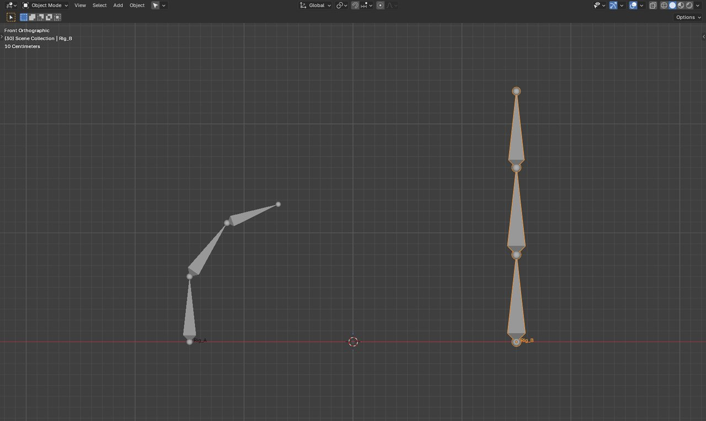
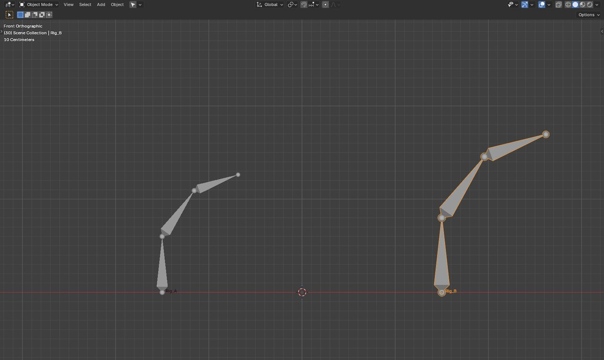
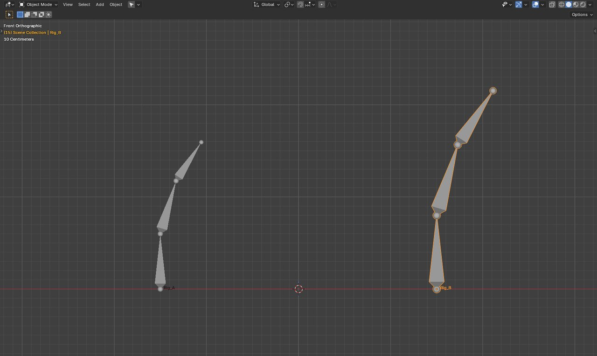
- In "Transfer Hub", choose the source rig in "Source" and the rig to transfer to in "Target".
- Set "Task" to "Build Bone Map" and click "Run Transfer Task".
- Set "Task" to "Rebuild + Live" and click "Run Transfer Task". Check that the target moves the same way.
- Set "Task" to "Bake Preview" and click "Run Transfer Task".
What to look for: Before, the rig on the right stays straight. With "Rebuild + Live", it bends the same way as the one on the left. After baking, the temporary connections are removed and the rig on the right also gets ordinary keys, so it moves the same as the left even on in-between frames.
5-36. Retarget Profile
Saves a bone map to text data as JSON (one way of writing data), or reads it back.
LocationInside "Transfer Tools".
| Item | What it does |
|---|---|
| Text | The name of the text data to use. When no text data with that name exists yet, the field is shown in red. |
| Export JSON / Import JSON | Exports the map, or reads back a saved map. |
5-37. Mapping Preview
Shows how well the bones of the source rig and the target rig are matched.
LocationInside "Transfer Tools".
| Item | What it does |
|---|---|
| Matched / High Confidence / Live | The number of matched bones, the number of confident matches, and the number of temporary transfers. |
| Mapping List | When a map exists, the bone pairs are listed. |
5-38. Migrated Bundled Tools
A section header for the other animation tools bundled with this add-on. To keep startup light, their contents are not loaded until you click "Load Tool".
LocationWhen you choose "All Functions" in "Overview Task", it appears at the very bottom. When you choose a group of bundled tools (such as "Pose") in "Task", only the section header of that group appears.
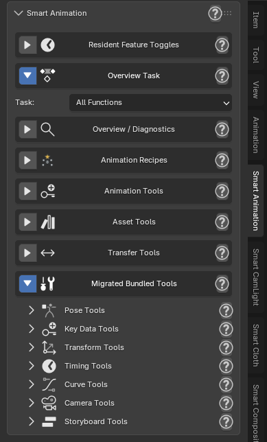
| Item | What it does |
|---|---|
| Pose Tools | Ani Offset and Sakura PoseLib (pose collections, pose sliders, and more). A pose preview is confirmed with Enter or a left click, and returns to the pose before it started with Esc or a right click. |
| Key Data Tools | AnimAll (keys for fine-grained data such as meshes, curves, UVs, and attributes). |
| Transform Tools | Animation Transform Offset (when you move an animated object with the mouse, the amount you moved is reflected in all of its keys). |
| Timing Tools | EaseIt (turns the span between keys in the Graph Editor into a preset curve with one button) and "Stop Motion Style Animator" (turns smooth motion into stepped motion). |
| Curve Tools | "Bezier Curve Editor Overlay" and Simplify Curves+ (reduces the points of curves and F-Curves). |
| Camera Tools | Camera Shakify (camera shake). After loading it, when you select a camera, a "Camera Shakify" panel appears in the "Smart Animation" tab of the Sidebar. Click "+" in the list to add a shake, and change "Shake" (the type of shake), "Influence", "Scale", and "Speed". When you open "Misc Utilities" (shown in English) at the bottom of the panel, there are two tools. "Fix All Camera Shakes" rebuilds all the camera shakes in the scene (it can be clicked only in Object Mode). Use it when a shake looks wrong. "Prep Blend File For Render Farm" adds to the file a script that runs automatically so the shake works even on a computer that does not have this add-on installed. Clicking it once per file is enough. |
| Storyboard Tools | Storytools (tools for Grease Pencil, cameras, maps, creating storyboard pages, and more). |
| Load Tool | Appears when you open the section header of each tool. Click it to make that tool available, and the counts for "Status", "Panels", and "Commands" appear, along with section headers such as "Quick Access", "Operators", and "Runtime Properties". |
ExampleSlow Down Only the Start of a Motion with EaseIt(demonstrated on a cube with 2 keys (Graph Editor))
EaseIt, a bundled tool, turns the curve between the selected keys into a preset shape with one button.
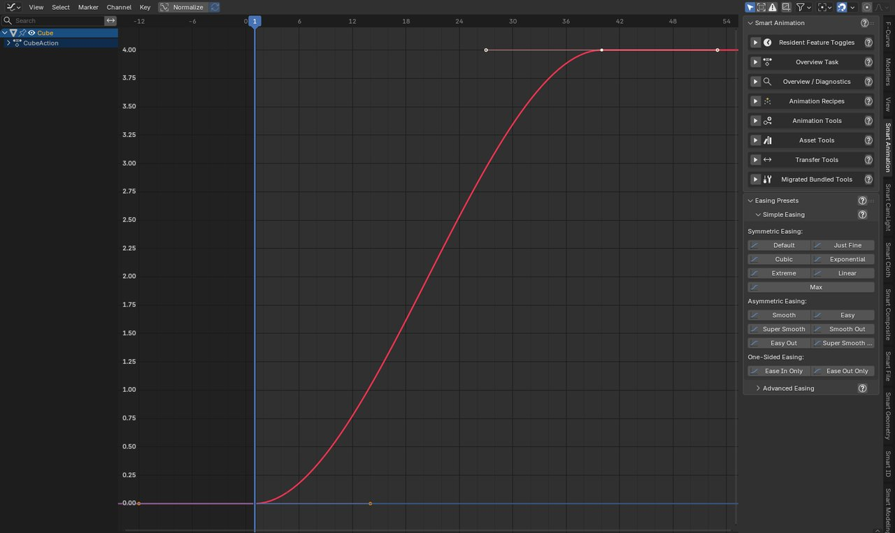
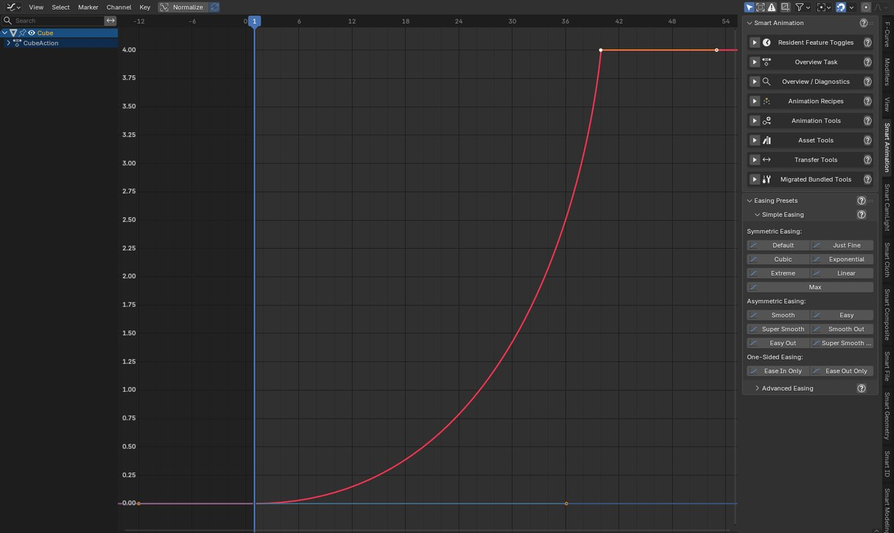
- Select an object with 2 keys and open the Graph Editor.
- In "Migrated Bundled Tools" > "Timing Tools", open the EaseIt section header and click "Load Tool".
- In the "Smart Animation" tab of the Graph Editor's Sidebar, open "Simple Easing" under "Easing Presets".
- In the Graph Editor, select both keys and click "Ease Out Only".
What to look for: Before, it is an S-shaped line that starts slowly and stops slowly. After, it becomes a line that starts slowly, gradually speeds up, and stops while still fast. The positions of the keys themselves do not move.
ExampleTurn Smooth Motion into Stepped Motion(demonstrated on a cube with a key on every frame (Graph Editor))
"Stop Motion Style Animator", a bundled tool, keeps a key every set number of frames and holds the values in between. The motion looks like puppet animation.
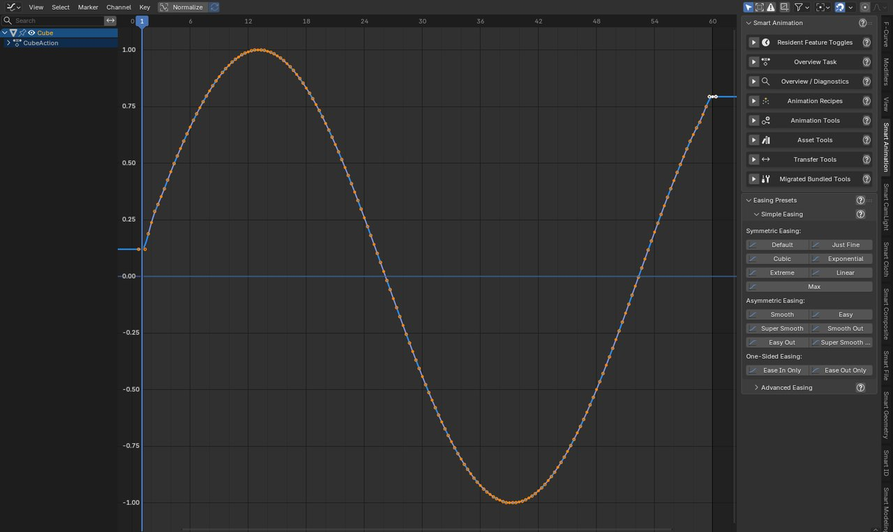
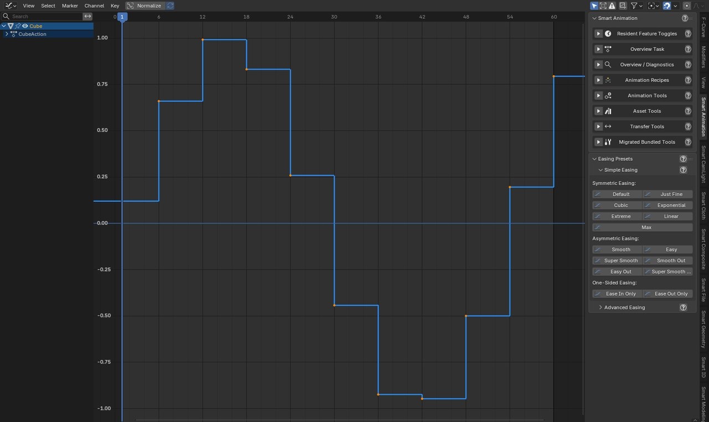
- Select an object with a key on every frame.
- In "Timing Tools", open the "Stop Motion Style Animator" section header and click "Load Tool".
- Open the "Runtime Properties" section header that appears after loading, and set "Step" to 6.
- In "Quick Access", click "Apply Stop Motion".
What to look for: The smooth line becomes a staircase. The key dots are thinned out to every 6 frames, and the values in between stay held.
ExampleCreate a Storyboard Page with Storytools(demonstrated on an empty scene)
Storytools, a bundled tool, is a toolset for storyboards. "Create Static Storyboard Pages" makes a page lined with panel frames in Grease Pencil.
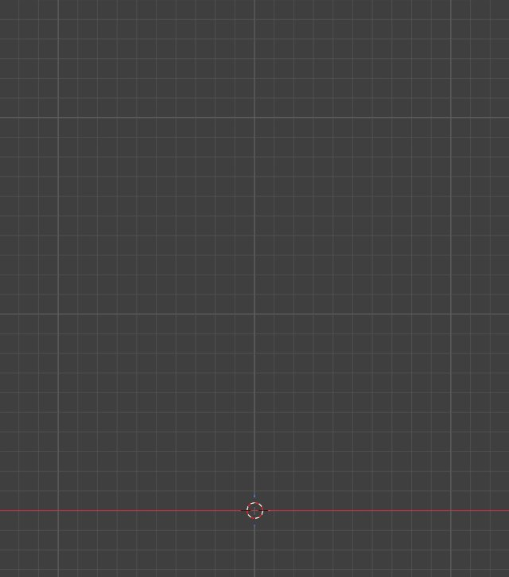
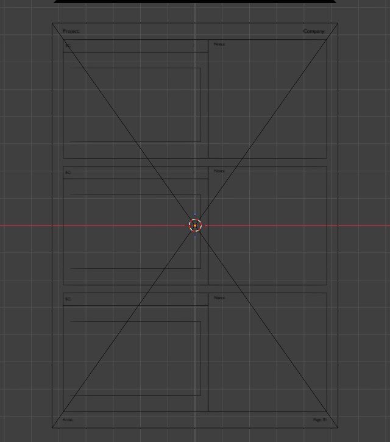
- In "Migrated Bundled Tools" > "Storyboard Tools", open the Storytools section header and click "Load Tool".
- Open the "Operators" section header that appears.
- Click "Create Static Storyboard Pages".
What to look for: On the screen that was empty, a storyboard page with panel frames lined up vertically is created. A camera that frames the page is created with it. You can draw in the frames with Grease Pencil.
6. Common Tasks
Create an In-Between Between Keys
Create a natural in-between pose between two poses.
- Select the animated object (or the armature in Pose Mode).
- Place the playhead on a frame between two keys.
- Open "Animation Recipes" > "Motion Director".
- Set "Mode" to "Tween Only" and set the "Tween" value (0.5 is exactly halfway).
- Click "Run Motion Director".
Result: An in-between key created from the keys before and after is placed at the current frame.
Store the Current Pose and Restore It Later
Store a pose that turned out well so you do not lose it.
- Select an armature and switch to Pose Mode.
- Open "Asset Tools" > "Pose Snapshots".
- Enter a name in "New Name" and click "Save".
- To go back after changing the pose, choose the stored pose from the list and click "Apply".
- To bring it only slightly closer, lower the "Blend" value and click "Blend Snapshot".
Result: You can return to the stored pose.
Clean Up Dense Keys Safely
Reduce keys that have multiplied too much from baking and similar operations.
- In "Overview / Diagnostics", make sure "Auto Backup" is enabled.
- Open "Animation Tools" > "Cleanup Hub" and set "Task" to "Cleanup Preview".
- Open the "Cleanup Preview" section header that appears above and check the number of keys that will be removed.
- Set "Task" to "Curve Simplify" or similar, make sure "Preview Only" is disabled, and click "Run Cleanup Task".
Result: The keys are reduced. The original Action has been duplicated as a backup.
Transfer Motion to a Different Rig
Transfer the motion of one character to another character with a different skeleton.
- In "Transfer Tools" > "Transfer Hub", choose the source armature in "Source" and the armature to transfer to in "Target".
- Set "Task" to "Build Bone Map" and click "Run Transfer Task".
- In "Mapping Preview", check that no bones are left unmatched.
- Set "Task" to "Rebuild + Live", click "Run Transfer Task", and play back the motion on the target to check it.
- If it looks good, set "Task" to "Bake Preview" and click "Run Transfer Task".
Result: The motion is placed on the target rig as ordinary keys.
Use the Bundled Tools
Call up bundled tools such as Sakura PoseLib.
- Set "Task" in "Overview Task" to "All Functions".
- Open "Migrated Bundled Tools" at the very bottom, and open the group of the tool you want to use (for example, "Pose Tools").
- Open the section header with the tool name and click "Load Tool".
- Work from the commands and settings that appear.
Result: That tool's commands and settings appear inside the SmartAnimation Suite panel.
7. Troubleshooting
- The "Smart Animation" tab does not appear.
- For how to open the Sidebar, see the relevant chapter of the SmartTools Overall Specification. When Smart Tools Manager is installed, its placement settings decide which editors show the tab.
- Only a little content appears when I open a section header.
- In "Task" of "Overview Task", you may have chosen only one group. Choosing "All Functions" shows every section header.
- No section headers other than Studio appear in "Animation Recipes".
- "UI Density" is set to "Compact". Set it to "Balanced" or "Studio", or enable "Advanced Controls".
- No buttons appear when I open the section header of a bundled tool.
- The contents of a bundled tool do not appear until it is loaded. Click "Load Tool" inside the tool's section header.
- I am worried that cleanup might delete too many keys.
- When you enable "Preview Only", it reports only the amount that would change without changing the data. When "Auto Backup" is enabled, a backup of the Action is made before cleanup.
- The panel open state and settings are still there the next time I open it.
- The settings in this section are saved so they remain even after you restart Blender. When "N-panel State Save" in "Always-on Toggles" is "On", they are saved the moment you change them; when "Off", they are saved when you close the scene or save the Preferences.
- Where can I see a detailed explanation of each section header?
- Click the "?" to the right of a section header to show its explanation. For common usage, see the relevant chapter of the SmartTools Overall Specification.
For problems common to every add-on, such as an add-on not appearing or the interface language not changing, see "Troubleshooting" in the SmartTools Overall Specification.
8. Glossary
- Keyframe (Key)
- A point that records values such as location or rotation at a given frame. The span between keys is connected automatically.
- F-Curve
- A line that represents how key values change. You can view it in the Graph Editor.
- Action
- Data that groups the keys of a single motion.
- NLA
- A mechanism that turns Actions into strips and arranges or stacks them.
- Bake
- To burn motion created by calculation or temporary connections into ordinary keys.
- In-Between (Tween)
- An intermediate pose inserted between two poses.
- Retarget
- To transfer the motion of one rig to a different rig.
- Bone Map
- A table of pairings between the bones of the source rig and the bones of the target rig.
- Contact
- The state in which a foot or similar part is on the floor and stationary.
- Euler Filter
- A process that fixes the discontinuity where a rotation curve suddenly jumps by one full turn.
- Shape Key
- Something that records differences in the shape of a mesh. It is used for facial expressions and similar purposes.
- Driver
- A mechanism that moves one value automatically to follow the movement of another value.
- Pose Mode
- A mode in which you move the bones of an armature to pose it.
- Ghost
- A helper that overlays the appearance of the frames before and after, like afterimages.
- Motion Path
- A helper that displays the path an object or bone moves along as a line.
- Sidebar (N Panel)
- A tabbed settings area that opens on the right side of an editor.
9. Appendix: Version, Checksum and Limitations
| Add-on | SmartAnimation Suite (smart_animation_suite) |
|---|---|
| Version | 1.0.0 |
| ZIP | SmartAnimationSuite_1.0.0.zip |
| Size | 1,105,580 bytes |
| SHA256 | 61ef4ebf18be584d519717b8f43f2debc5d5b91e535598b6b7fa7efec139e6d6 |
Limitations and Notes
- This add-on has no add-on settings screen in the Preferences. All settings are made in the Sidebar panels.
- The bundled tools show no contents (commands or settings) until you click "Load Tool".
- The detailed section headers of "Animation Recipes" do not appear when "UI Density" is "Compact" unless you enable "Advanced Controls".
- "Cleanup Preview" appears only when there is an Action. "Current Findings" appears only when there are problems and "Show Safety Hints" is enabled.
- When Smart Tools Manager is installed, the editors that show the tab follow its placement settings.
- Moving, rotating, and scaling in Animation Transform Offset are operations that you move with the mouse and then confirm.
SmartAnimation Suite Manual v1.0.0 / Built 2026-11-19